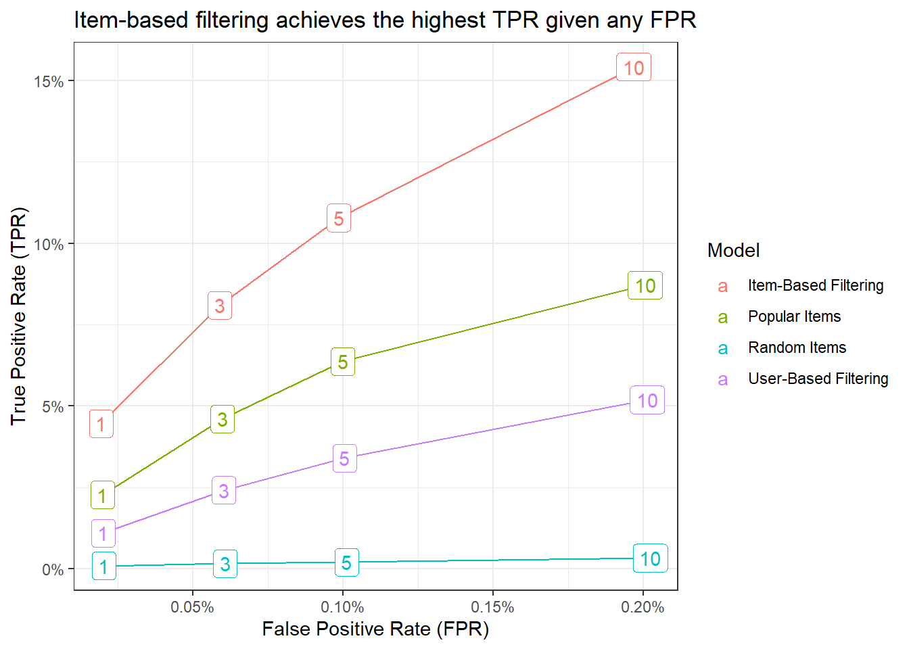
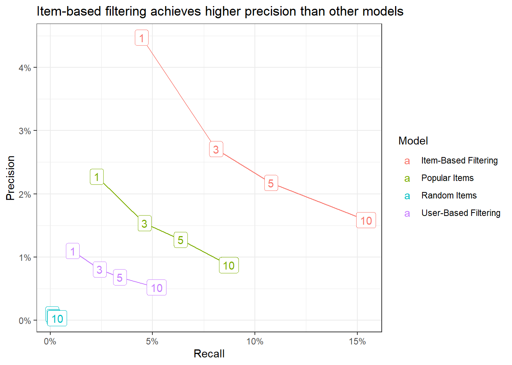

Recommender systems are a key component of our digital lifes, ranging from e-commerce, online advertisements, movie recommendations, or more generally all kind of product recommendations. A recommender system aims to efficiently deliver relevant information to users by automatically searching through a large volume of dynamically generated information to provide users with personalized content. In this chapter, we illustrate the concept of recommender systems in building a simple stock recommendation tool that relies on publicly available portfolios from the social trading platform wikifolio.com. The recommender at the end of the chapter proposes stocks for users who already have their own portfolio and look for new investment opportunities.
wikifolio is a blablabla
Classic handbook: https://link.springer.com/book/10.1007/978-0-387-85820-3
Blog posts: https://medium.com/genifyai/recommender-systems-and-applications-in-banking-f0cef8f87fa6
0.1 Recommenders via collaborative filtering
In collaborative filtering, recommendations are purely based on past interactions between users and items to produce new recommendations. The main notion is that past user-item interactions are sufficient to detect similar users or items. Broadly speaking, there are two subclasses of collaborative filtering: the memory-based approach which essentially searches nearest neighbors based on recorded transactions and is hence model-free; and the model-based approach where new representations of users and items are built based on some generative pre-estimated model. Theoretically speaking, the memory-based approach has a low bias (since there is no latent model assumed), but a high variance (since the recommendations change a lot in the nearest neighbor search). The model-based approach relies on a trained interaction model and has hence a relatively higher bias, but a lower variance (recommendations are more stable since they come out of a model).
Advantages of collaborative filtering:
- No information about users or items are required.
- High precision with little data.
- The more interaction between users and items is available, the more recommendations become accurate.
Disadvantages of collaborative filtering:
- Cold start: it is impossible to make recommendations to a new user or recommend a new item. Possible solutions: recommend random or popular items to new users or recommend new items to random or different groups of users; use non-collaborative method for early life of user.
- Scalability: if you have millions of users or items, a lot of computational power is required to calculate recommendations.
- Sparsity: if the number of items is large relative and most users only have rated a small subset of all items, then the resulting representation has many zero interactions and might hence lead to computational difficulties.
Here is the list of recommenders we consider for the backtest:
- Random Items: the benchmark case because it just stupidly chooses random stocks from all possible choices.
- Popular Items: just recommended the most popular stocks to each user (measured by the number of wikifolios that hold the stock).
- Association Rules: each wikifolio and its portfolio is considered as a transaction. Association rule mining finds similar portfolios across all users (if a users has x, y and z in his/her portfolio, then he/she is X% likely of also including w). It can be fully pre-computed.
- Item-Based Filtering: the algorithm calculates a similarity matrix across stocks. Recommendations are then based on the list of most similar stocks to the ones the wikifolio already has in its portfolio. This approach is also quite efficient since the similarities are pre-computed and recommendations can be generated very fast.
- User-Based Filtering: the algorithm finds a neighborhood of similar wikifolios based on their portfolios for each wikifolio (for this exercise it is set to 100 most similar wikifolios). Recommendations are then based on what the most similar wikifolios have in their portfolio.
0.2 Data preparation
# TODO: check whether we can use wikifolio data and how to host it (maybe pin?)
wikifolio_portfolios <- read_rds("data/wikifolio_portfolios.rds") %>%
select(wikifolio = WikifolioIsin,
stock = UnderlyingIsin,
quantity = UnderlyingQuantity,
price = UnderlyingPrice,
weight = UnderlyingPortfolioWeight) %>%
mutate(in_portfolio = 1) %>%
group_by(stock) %>%
filter(n_distinct(wikifolio) > 1) %>%
ungroup() %>%
group_by(wikifolio) %>%
filter(n_distinct(stock) > 1) %>%
ungroup()# Convert long data to binary rating matrix where only non-NA values are stored
# explicitely and NA values are represented by dots
binary_rating_matrix <- wikifolio_portfolios %>%
pivot_wider(id_cols = wikifolio,
names_from = stock,
values_from = in_portfolio,
values_fill = list(in_portfolio = 0)) %>%
select(-wikifolio) %>%
as.matrix() %>%
as("binaryRatingMatrix")
binary_rating_matrix1 Evaluation of recommenders
# cross validation: split in to training and test data
# k-fold: k-times recursive estimation of cross validation
# given: -1 means that all but 1 randomly selected item is ignored for evaluation
scheme <- binary_rating_matrix %>%
evaluationScheme(method = "cross",
k = 5,
train = 0.8,
given = -1)
schemerecommenderRegistry$get_entries(dataType = "binaryRatingMatrix")
# specify set of algorithms
# popular = number of users who have the item in their profile
# support = how frequently the item set appears
# confidence = how often the rule has been found to be true
# nn = number of nearest neighbors
algorithms <- list(
"Random Items" = list(name = "RANDOM", param = NULL),
"Popular Items" = list(name = "POPULAR", param = NULL),
"Association Rules" = list(name = "AR", param = list(supp = 0.01, conf = 0.1)),
"Item-Based Filtering" = list(name = "IBCF", param = list(k = 10)),
"User-Based Filtering" = list(name = "UBCF", param = list(method = "Cosine", nn = 100))
)
# run algorithms
number_of_recommendations <- c(1, 3, 5, 10)
results <- evaluate(scheme,
algorithms,
type = "topNList",
progress = TRUE,
n = number_of_recommendations
)
results
# get evaluation metrics averaged of cross-validation folds
results_tbl <- results %>%
avg() %>%
map(as_tibble) %>%
bind_rows(.id = "model")For each recommender, we count the following numbers:
- True Negative (TN) = number of not predicted items that do not correspond to withheld items
- False Positive (FP) = number of incorrect predictions that do not correspond to withheld items
- False negative (FN) = number of not predicted items that correspond to withheld items
- True Positive (TP) = number of correct predictions that correspond to withheld items
The two figures below present the most common evaluation techniques for the performance of recommender algorithms in backtests.
1.1 ROC curves
This approach comes from signal-detection and is called §Receiver Operating Characteristic” (ROC). The ROC-curve plots the algorithm’s probability of detection (TPR) agains the probability of false alarm (FPR).
- TPR = TP / (TP + FN) (i.e. share of true positive recommendations relative to all known portfolios)
- FPR = FP / (FP + TN) (i.e. share of incorrect recommendations relative to )
The bigger the area under the ROC curve, the better is the corresponding algorithm.
results_tbl %>%
ggplot(aes(FPR, TPR, colour = model)) +
geom_line() +
geom_label(aes(label = n)) +
labs(x = "False Positive Rate (FPR)",
y = "True Positive Rate (TPR)",
title = "Item-based filtering achieves the highest TPR given any FPR",
colour = "Model") +
theme_bw() +
scale_y_continuous(labels = percent) +
scale_x_continuous(labels = percent)
1.2 Precision-recall curves
The following two measures are often used in information retrieval problems:
- Precision = TP / (TP + FP) (i.e. correctly recommended items relative to total recommended items)
- Recall = TP / (TP + FN) (i.e. correctly recommended items relative to total number of known useful recommendations)
The goal is to have a higher precision for any level of recall. In fact, there is trade-off between the two measures since high precision means low recall and vice-versa.
results_tbl %>%
ggplot(aes(x = recall, y = precision, colour = model)) +
geom_line() +
geom_label(aes(label = n)) +
labs(x = "Recall", y = "Precision",
title = "Item-based filtering achieves higher precision than other models",
colour = "Model") +
theme_grey(base_size = 14) +
theme_bw() +
scale_y_continuous(labels = percent) +
scale_x_continuous(labels = percent)
1.3 Predictions for new users
recommender <- Recommender(binary_rating_matrix, method = "IBCF")sample_portfolio <- c("US67066G1040", "US0378331005")
sample_rating_matrix <- tibble(distinct(wikifolio_portfolios, stock)) %>%
mutate(in_portfolio = if_else(stock %in% sample_portfolio, 1, 0)) %>%
pivot_wider(names_from = stock,
values_from = in_portfolio,
values_fill = list(in_portfolio = 0)) %>%
as.matrix() %>%
as("binaryRatingMatrix")
prediction <- predict(recommender, sample_rating_matrix, n = 1)
as(prediction, "list")## $`0`
## [1] "US5949181045"2 Content-based filtering and hybrid recommenders
Maybe move this up to the collaborative filtering text?
Content-based filtering methods exploit information about users or items to create recommendations by building a model that relates available characteristics of users or items to each other. The recommendation problem is hence cast into a classification problem (user will like the item or not) or more generally a regression problem (which rating will user give an item). The classification problem can be item-centered by focusing on available user information and estimating a model for each item. If there are a lot of user-item interactions available, the resulting model is fairly robust, but it is less personalised (as it ignores user characteristics apart from interactions). The classification problem can also be user-centered by working with item features and estimating a model for each user. However, if a user only has few interactions then the resulting model becomes easily instable. Content-based fitlering can also be neither user nor item-centered by stacking the two feature vectors and putting them into a neural network.
Advantages of content-based filtering:
- Can make recommendations for new users and recommend new items
Disadvantages of content-based filtering:
- Training: needs a lot of user and item examples to reliably train the model
- Tuning: might be much harder to tune in practice than collaborative filtering approaches.
- Missingness: missing information might be a problem for the the content-based approach since there is no clear solution on how to treat missingness.
Hybrid recommender systems combine both collaborative and content-based filtering to overcome the challenges of each individual approach. There are different hybridization techniques available, e.g., combining the scores of different components (weighted), choosing among different compontent (switching), following strict priority rules (cascading), presenting outputs from different components at the same time (mixed), etc.